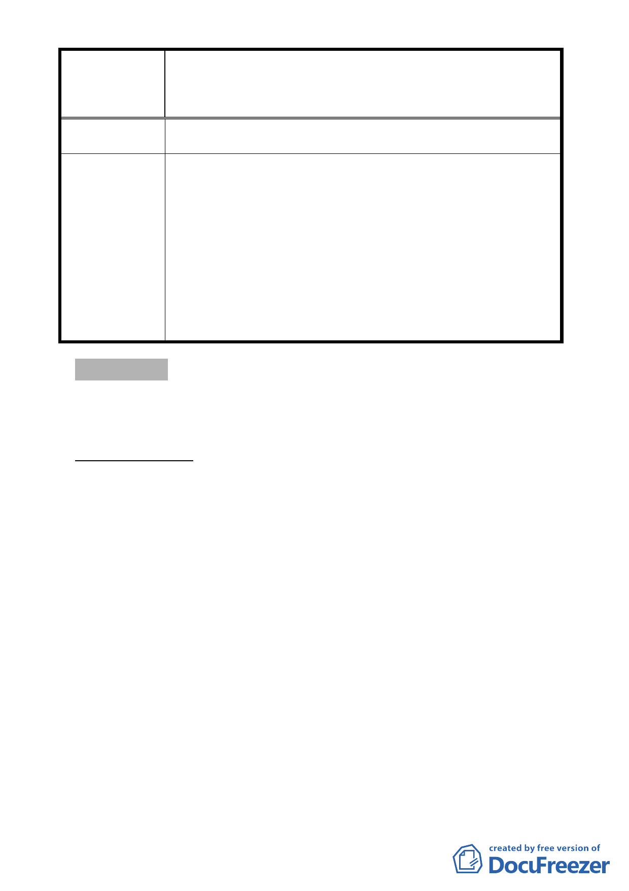

案名
變更臺北市大安區辛亥段五小段138-2、138-6、139、140-1、
140-2、140-3 地號等6筆土地保護區為殯儀館用地主要計畫
案
用，坡度超過 30%以上均不開發。
委員會決議
一、本案除以下幾點文字應作補述與修正外，其餘依市府所
送計畫書、本次會議簡報內容與回應資料修正通過：
（一）計畫緣起內請加強說明欲變更之範圍市府已有整建實
施計畫並編列年度預算，屬市府核定之重大建設計
畫，符合都市計畫法第 27 條第 1 項第 4 款規定。
（二）計畫書第 3 頁實施進度與經費表格文字-土地取得方式
「徵購」請修正為「徵收」。
二、餘依市府回覆意見辦理。
討論事項 四
案名：修訂臺北市北投區八仙段二小段 719 地號等 11 筆土地自
來水事業用地主要計畫案
案情概要說明：
一、計畫範圍與面積：
本計畫區包括本市北投區八仙段二小段 719、720、720-3、
720-4、720-5、720-6、722、723、724、725、721 地號等 11 筆
土地，面積合計 7,416 平方公尺，使用分區為自來水事業用
地（公共設施用地）。
二、計畫緣起：
（一）本計畫區前經市府 99 年 7 月 22 日公告發布實施變更公園
用地為自來水事業用地，其都市計畫書土地取得方式載明
「徵收及有償撥用」。
（二）因本地區 82 年 1 月 15 日公告發布實施之「擬（修）訂關
渡平原特定專用區（大度路以南、洲美堤防以西、關渡堤
防以北部分）主要計畫案」，公園用地之都市計畫書取得方
式係規定「本地區開發採一般徵收方式為原則，惟如土地
- 13 -